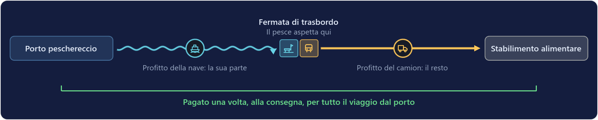

Fermate e ordini
Dove va un veicolo e cosa fa lì.
Un veicolo visita le sue fermate in ordine, poi ricomincia dalla prima.
- A ogni fermata scarica solo ciò che quella stazione accetta. È lì che incassi. Poi carica ciò che è in attesa.
- Il carico non accettato resta a bordo, a meno che la fermata non sia un trasbordo (vedi sotto).
- I treni invertono la marcia a fine linea, quindi basta una semplice linea da un capo all'altro.
- Aggiungi, togli e riordina le fermate in qualsiasi momento nella finestra del veicolo.
Scegli sulla mappa
- Premi Scegli sulla mappa nella finestra di acquisto o in quella di un veicolo. La finestra si sposta.
- Clicca sulle tue stazioni una dopo l'altra. Ogni clic aggiunge una fermata, e la barra in alto le elenca.
- Annulla toglie l'ultima fermata.
- La selezione resta attiva finché non premi Fatto o Esc.
- Se una stazione non si può usare, la nota accanto al mouse dice perché.
Carico completo
Ogni fermata ha una casella Carico completo nella finestra del veicolo: il veicolo aspetta lì finché non è pieno. Usala dove nasce il carico, mai dove viene consegnato.
Trasbordi
Il carico può cambiare veicolo lungo il viaggio. Per esempio, il pesce di un porto peschereccio che attraversa il mare in nave e poi prosegue nell'entroterra in camion fino a uno stabilimento alimentare:


- Costruisci un molo sulla riva opposta e una fermata subito accanto, così si uniscono in una sola stazione.
- Assegna alla nave il molo del porto e quella stazione, e spunta Trasbordo sulla seconda fermata (nella finestra di acquisto o in quella della nave).
- Compra camion che vadano da quella stazione allo stabilimento alimentare.
- A una fermata di trasbordo, un veicolo lascia il carico che la fermata non accetta. Lì aspetta i tuoi altri veicoli, che lo caricano prima di qualsiasi altro carico dello stesso tipo.
- I tuoi veicoli possono anche caricare la merce in trasbordo da un'altra delle tue stazioni entro 3 caselle, misurate tra le caselle più vicine delle due stazioni. Cerca Stazioni vicine per il trasbordo nella finestra della stazione. Lascia Trasbordo disattivato alla fermata di carico.
- Vieni pagato una sola volta, alla consegna, per tutto il viaggio da dove è stato caricato la prima volta.
- Il profitto del primo veicolo mostra la sua parte di quella tariffa e quello dell'ultimo il resto, così vedi quanto rende ogni tratta.
- Un veicolo non riprende mai il carico che ha lasciato alla propria fermata di trasbordo.
Solo scarico, non caricare, passa dal deposito
Il piccolo menu accanto alla casella Trasbordo di una fermata contiene altri tre ordini. Il pulsante mostra un'icona per ognuno di quelli attivi.
- Solo scarico: si scarica tutto. Ciò che la stazione accetta viene consegnato e pagato; il resto resta lì come trasbordo. Non si carica nulla.
- Non caricare: consegna ciò che la stazione accetta, ma non carica nulla, così il veicolo tiene lo spazio per una fermata successiva.
- Passa dal deposito: dopo la fermata il veicolo passa dal tuo deposito più vicino, a qualunque distanza, per una revisione e qualsiasi cambio di carico ordinato. Navi e aerei fanno invece la revisione nelle loro stazioni.
- Una fermata non può essere Solo scarico e Carico completo insieme, e Non caricare è disattivato finché uno dei due è spuntato. Su una linea, questi ordini valgono per tutti i suoi veicoli.
Veicoli persi
Quando un veicolo si perde, un messaggio lo segnala: cliccaci per aprire il veicolo. Quando se ne perdono diversi insieme, il messaggio apre Problemi.
Un veicolo che indica Perso non trova la strada per la sua prossima fermata. Continua a provare; sistema la strada o i binari e riprenderà il viaggio.
Una fermata la cui stazione è stata demolita è segnata come Demolito nella finestra del veicolo. Aggiungi un'altra fermata e verrà tolta dal percorso.
Cambiare carico
- Premi Cambia carico accanto alla barra del carico nella finestra del veicolo, scegli cosa deve trasportare e conferma.
- Il veicolo consegna ciò che trasporta alla prossima fermata, non carica niente e va a un deposito, dove si fa il cambio. Navi e aerei vengono cambiati in quella stessa fermata.
- Finché non è fatto puoi annullare il cambio e recuperare i soldi.
- Il veicolo mantiene i suoi ordini, la sua età e il suo storico.
- Un treno può anche aggiungere, togliere o mescolare vagoni. Convertire un vagone costa 975 $ e uno nuovo 6.500 $; uno tolto ti restituisce quanto vale ancora.
- Qualsiasi altro veicolo paga il 15% del suo prezzo per il cambio.
- Il carico a bordo che non ci sta più va perso.
Nella finestra del veicolo
| Pulsante | Cosa fa |
|---|---|
| Segui | La telecamera segue il veicolo. |
| Ferma | Lo ferma alla prossima stazione; premi di nuovo per farlo ripartire. |
| Solo treni: lo fa invertire dove si trova e lo manda a una delle sue fermate raggiungibile da quella parte, o altrimenti a un deposito. | |
| Clona | Ne compra un altro con gli stessi ordini. |
| Rinnova | Lo sostituisce con uno nuovo dello stesso modello. |
| Vendi | Clicca due volte. Recuperi il suo valore attuale. |